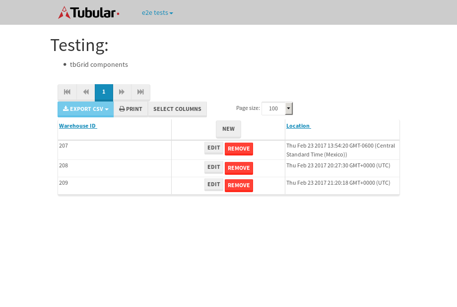

tbColumn.Grid Sorting - 27.087sTests: 5Skipped: 0Failures: 0 should sort data in ascending order then on descending order when sorting by Order Id column - 5.54sTests passed: 100.00%should order data in ascending order when click-sorting an unsorted text column - 5.151sTests passed: 100.00%should order data in descending order when click-sorting an ascending-sorted text column - 5.701sTests passed: 100.00%should order data in ascending order when click-sorting an unsorted date column - 5.298sTests passed: 100.00%should order data in descending order when click-sorting twice an unsorted date column - 5.396sTests passed: 100.00%
tbEmptyForm - 3.643sTests: 3Skipped: 0Failures: 0 should have an empty required field - 0.791sTests passed: 100.00%should not be able to click on save - 0.551sTests passed: 100.00%should load default value for numeric field - 0.518sTests passed: 100.00%
Tubular Filters.tbColumnFilter - 105.967sTests: 12Skipped: 0Failures: 0 should cancel filtering when clicking outside filter-popover - 8.647sTests passed: 100.00%should disable Value text-input for "None" filter - 6.696sTests passed: 100.00%should disable apply button for "None" filter - 6.867sTests passed: 100.00%should decorate popover button when showing data is being filtered for its column - 11.96sTests passed: 100.00%should correctly filter data for the "Equals" filtering option - 8.269sTests passed: 100.00%should correctly filter data for the "Not Equals" filtering option - 8.508sTests passed: 100.00%should correctly filter data for the "Contains" filtering option - 8.179sTests passed: 100.00%should correctly filter data for the "Not Contains" filtering option - 8.324sTests passed: 100.00%should correctly filter data for the "Starts With" filtering option - 6.819sTests passed: 100.00%should correctly filter data for the "Not Starts With" filtering option - 6.799sTests passed: 100.00%should correctly filter data for the "Ends With" filtering option - 6.761sTests passed: 100.00%should correctly filter data for the "Not Ends With" filtering option - 6.797sTests passed: 100.00%
Tubular Filters.tbColumnDateTimeFilter - 136.093sTests: 12Skipped: 0Failures: 0 should cancel filtering when clicking outside filter-popover - 7.416sTests passed: 100.00%should disable Value text-input for "None" filter - 6.601sTests passed: 100.00%should disable apply button for "None" filter - 6.559sTests passed: 100.00%should clear filtering when clicking on Clean button - 17.904sTests passed: 100.00%should decorate popover button when showing data is being filtered for its column - 12.698sTests passed: 100.00%should correctly filter data for the "Equals" filtering option - 6.796sTests passed: 100.00%should correctly filter data for the "Not Equals" filtering option - 6.979sTests passed: 100.00%should correctly filter data for the "Between" filtering option - 12.087sTests passed: 100.00%should correctly filter data for the "Greater-or-equal" filtering option - 11.979sTests passed: 100.00%should corretlly filter data for the "Greater" filtering option - 12.541sTests passed: 100.00%should correctly filter data for the "Less-or-equal" filtering option - 11.785sTests passed: 100.00%should correctly filter data for the "Less" filtering option - 12.14sTests passed: 100.00%
Tubular Filters.tbColumnOptionsFilter - 79.797sTests: 3Skipped: 0Failures: 0 should cancel filtering when clicking outside filter-popover - 8.349sTests passed: 100.00%should decorate popover button when showing data is being filtered for its column - 11.888sTests passed: 100.00%should filter column-elements in accordance to the selected filter when selecting a single option - 48.684sTests passed: 100.00%
Tubular Filters.tbTextSearch - 50.132sTests: 5Skipped: 0Failures: 0 min-chars is not set - 1.185sTests passed: 100.00%should filter data in searchable-column customer name to matching inputted text, starting from 3 characters - 7.174sTests passed: 100.00%should filter data in searchable-column shipper city to matching inputted text, starting from 3 characters - 13.008sTests passed: 100.00%should show clear button when there is inputted text only - 6.693sTests passed: 100.00%should clear filtering when clicking clear button - 16.74sTests passed: 100.00%
tbForm related components.tbCheckboxField - 7.804sTests: 2Skipped: 0Failures: 0 should save changes on "SAVE" - 4.233sTests passed: 100.00%should discard changes on "CANCEL" - 2.009sTests passed: 100.00%
tbForm related components.tbDropDownEditor - 11.728sTests: 5Skipped: 0Failures: 0 should set initial input value to the value of "value" attribute when defined - 1.747sTests passed: 100.00%should show the component name value in a label field when "showLabel" attribute is true - 1.98sTests passed: 100.00%should show a help field equal to this attribute, is present - 2.237sTests passed: 100.00%should submit modifications to item/server when clicking form "Save" - 2.851sTests passed: 100.00%should NOT submit modifications to item/server when clicking form "Cancel" - 2.333sTests passed: 100.00%
tbForm related components.tbTextArea - 18.149sTests: 7Skipped: 0Failures: 0 should set initial input value to the value of "value" attribute when defined - 1.808sTests passed: 100.00%should be invalidated when the number of chars is not in the range of "min" and "max" attributes - 2.284sTests passed: 100.00%should show the component name value in a label field when "showLabel" attribute is true - 1.877sTests passed: 100.00%should show a help field equal to this attribute, is present - 1.771sTests passed: 100.00%should require the field when the attribute "required" is true - 2.566sTests passed: 100.00%should submit modifications to item/server when clicking form "Save" - 4.215sTests passed: 100.00%should NOT submit modifications to item/server when clicking form "Cancel" - 2.536sTests passed: 100.00%
tbForm related components.tbDateEditor - 13.731sTests: 6Skipped: 0Failures: 0 should set initial date value to the value of "value" attribute when defined - 1.717sTests passed: 100.00%should be invalidated when the date is not in the range of "min" and "max" attributes - 2.456sTests passed: 100.00%should show the component name value in a label field when "showLabel" attribute is true - 2.178sTests passed: 100.00%should show a help field equal to this attribute, is present - 1.748sTests passed: 100.00%should submit modifications to item/server when clicking form "Save" - 2.338sTests passed: 100.00%should NOT submit modifications to item/server when clicking form "Cancel" - 2.489sTests passed: 100.00%
tbForm related components.tbTypeaheadEditor - 19.968sTests: 7Skipped: 0Failures: 0 should show an options list when there is an API-info/component entered-data - 2.303sTests passed: 100.00%should select the option clicked - 2.26sTests passed: 100.00%should show a "delete" button when an option/match is selected, and delete the option if button is clicked - 3.25sTests passed: 100.00%should show a label value equal to the component name when "showLabel" attribue is true - 1.872sTests passed: 100.00%should require a value when "require" attribute is true - 2.635sTests passed: 100.00%should submit modifications to item/server when clicking form "Save" - 3.072sTests passed: 100.00%should NOT submit modifications to item/server when clicking form "Cancel" - 3.585sTests passed: 100.00%
tbForm related components.tbSimpleEditor - 22.607sTests: 9Skipped: 0Failures: 0 should set initial input value to the value of "value" attribute when defined - 2.03sTests passed: 100.00%should be invalidated when the number of chars is not in the range of "min" and "max" attributes - 3.286sTests passed: 100.00%should show the component name value in a label field when "showLabel" attribute is true - 1.885sTests passed: 100.00%should set input placeholder to the value of "placeholder" attribute - 2.575sTests passed: 100.00%should validate the control using the "regex" attribute, if present - 2.037sTests passed: 100.00%should show a help field equal to this attribute, is present - 1.849sTests passed: 100.00%should require the field when the attribute "required" is true - 2.371sTests passed: 100.00%should submit modifications to item/server when clicking form "Save" - 3.697sTests passed: 100.00%should NOT submit modifications to item/server when clicking form "Cancel" - 2.083sTests passed: 100.00%
tbForm related components.tbNumericEditor - 18.282sTests: 7Skipped: 0Failures: 0 should set initial component value to the value of "value" attribute when defined - 2.287sTests passed: 100.00%should be invalidated when the entered number is not in the range of "min" and "max" attributes - 2.417sTests passed: 100.00%should show the component name value in a label field when "showLabel" attribute is true - 2.131sTests passed: 100.00%should show a help field equal to this attribute, is present - 1.882sTests passed: 100.00%should require the field when the attribute "required" is true - 2.393sTests passed: 100.00%should submit modifications to item/server when clicking form "Save" - 4.101sTests passed: 100.00%should NOT submit modifications to item/server when clicking form "Cancel" - 2.428sTests passed: 100.00%
tbForm Connection Error NoModelKey - 2.52sTests: 1Skipped: 0Failures: 0 tbForm connection error functionality - 0.529sTests passed: 100.00%
tbForm Connection Error NoServerUrl - 2.438sTests: 1Skipped: 0Failures: 0 tbForm connection error functionality - 0.468sTests passed: 100.00%
tbGridComponents - 8.689sTests: 6Skipped: 0Failures: 1 should add item with newRow method - 2.853sTests passed: 100.00%should add item with newRow method and cancel action - 0.788sTests passed: 100.00%should update item with tbSaveButton - 0.671sFailed: ElementNotVisibleError✗Tests passed: 0.00%should NOT update item on cancel Update action - 0.925sTests passed: 100.00%should remove item with tbRemoveButton - 1.093sTests passed: 100.00%should NOT remove item on cancel Remove action - 0.898sTests passed: 100.00%
tbGridPager.navigation buttons - 9.582sTests: 1Skipped: 0Failures: 0 should perform no action when clicking on the numbered navigation button corresponding to the current-showing results page - 1.713sTests passed: 100.00%
tbGridPager.navigation buttons.first/non-last results page related functionallity - 3.894sTests: 2Skipped: 0Failures: 0 should disable "first" and "previous" navigation buttons when in first results page - 1.921sTests passed: 100.00%should enable "last" and "next" navigation buttons when in a results page other than last - 1.973sTests passed: 100.00%
tbGridPager.navigation buttons.last/non-first results page related functionallity - 3.975sTests: 2Skipped: 0Failures: 0 should disable "last" and "next" navigation buttons when in last results page - 1.887sTests passed: 100.00%should enable "first" and "previous" navigation buttons when in a results page other than first - 2.088sTests passed: 100.00%
tbGridPager.page navigation - 7.877sTests: 5Skipped: 0Failures: 0 should go to next results page when clicking on next navigation button - 1.914sTests passed: 100.00%should go to previous results page when clicking on previous navigation button - 1.882sTests passed: 100.00%should go to last results page when clicking on last navigation button - 1.447sTests passed: 100.00%should go to first results page when clicking on first navigation button - 1.393sTests passed: 100.00%should go to corresponding results page when clicking on a numbered navigation button - 1.24sTests passed: 100.00%
tbGridPagerInfo - 4.733sTests: 2Skipped: 0Failures: 0 should show text in accordance to numbered of filter rows and current results-page - 1.609sTests passed: 100.00%should show count in footer - 0.626sTests passed: 100.00%
tbPageSizeSelctor - 12.212sTests: 4Skipped: 0Failures: 0 should filter up to 10 data rows per page when selecting a page size of "10" - 2.657sTests passed: 100.00%should filter up to 20 data rows per page when selecting a page size of "20" - 1.75sTests passed: 100.00%should filter up to 50 data rows per page when selecting a page size of "50" - 3.234sTests passed: 100.00%should filter up to 100 data rows per page when selecting a page size of "100" - 2.813sTests passed: 100.00%
tbRowSelectable - 9.979sTests: 2Skipped: 0Failures: 0 selected rows - 5.384sTests passed: 100.00%unselected rows - 3.078sTests passed: 100.00%
tbSingleForm - 18.627sTests: 8Skipped: 1Failures: 0 should load correct info - 0s***Skipped***Tests passed: 0%should change customer name - 2.687sTests passed: 100.00%should save it - 2.938sTests passed: 100.00%should clear the inputs - 2.416sTests passed: 100.00%should update - 3.068sTests passed: 100.00%should reset editor - 2.429sTests passed: 100.00%should not save if not Changes - 2.403sTests passed: 100.00%should not be able to click on save - 2.686sTests passed: 100.00%
{kind=link}